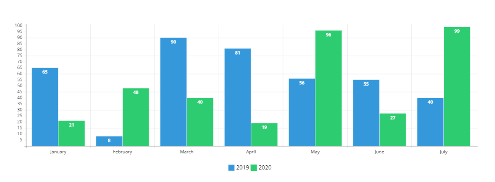

Por que mostrar esses dados?
Muitos pais com filhos que sofrem de IRC se deparam com a falta de Dados Públicos em relação à Dados de Nefrologia Pediátrica. Ao mesmo tempo, estas pessoas gostariam de levantar todas as informações para ajudar a Frente Parlamentar de Nefrologia, criada em junho de 2023, e melhorar as Políticas Públicas em relação à Nefrologia Pediátrica. Acredita-se que, trazendo estes dados à luz, possa-se sensibilizar o Poder Público e a população em geral.
Número de clínicas e hospitais que oferecem hemodiálise pediátrica


Centros transplantadores de crianças
Número de crianças em filas de transplante no Brasil
Crianças em tratamento conservador
Centros que atendem crianças com menos de 10kg
Informações sobre o projeto Proadi SUS Hospital Samaritano
Você precisa de uma conta para poder visualizar essas informações.